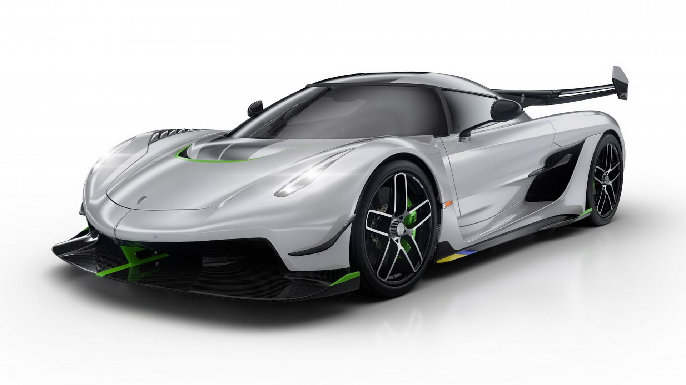
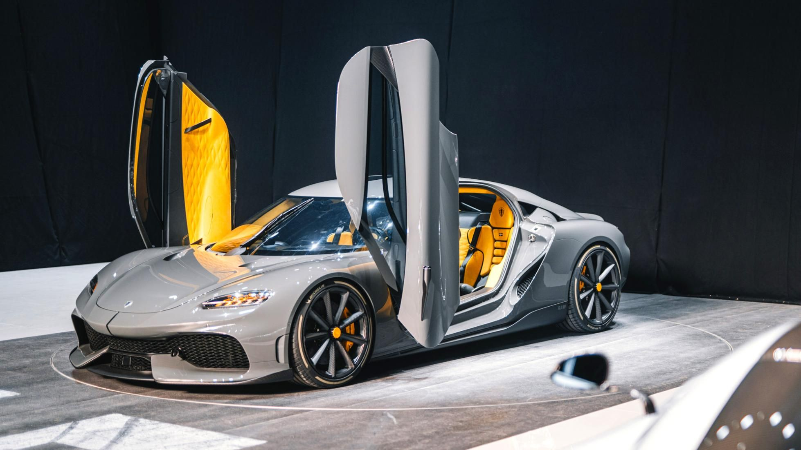
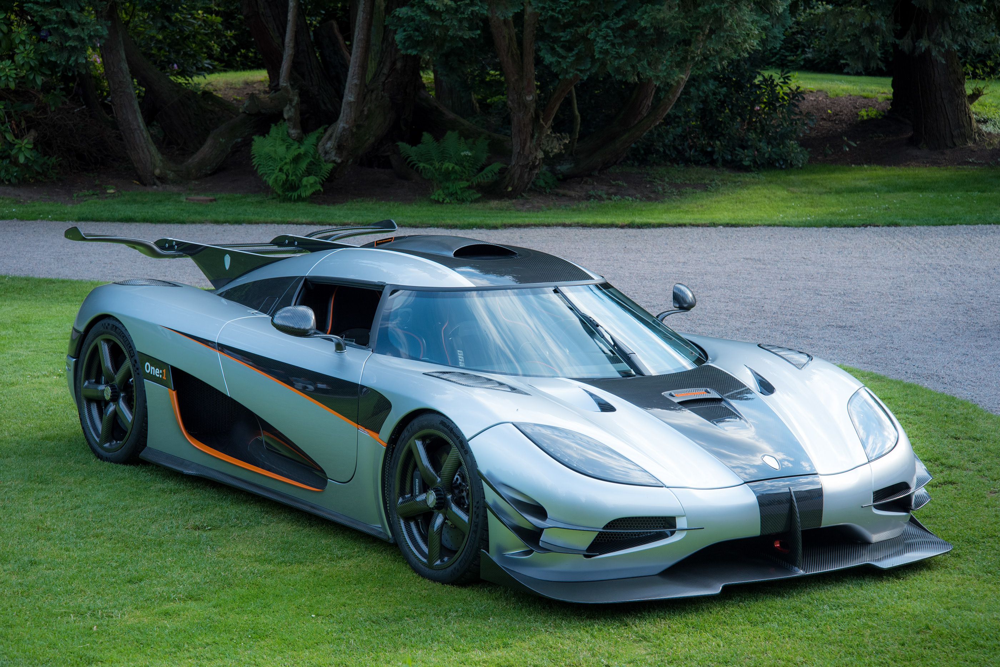

Машинки Koenigsegg
| Koenigsegg Jesko | |
|  |
Объем
5.1 л
Мощность 1602 л.с. Коробка Робот Тип двигателя бензиновый Привод задний Разгон 2.4 с Расход 35.6 л Страна марки Швеция Класс автомобиляS Количество дверей 2 Снаряженная масса, кг1420 Снаряженная масса, кг1420 Максимальная мощность, л.с./кВт при об/мин1602/1195 при 7800 стоимость 2 800 000$ |
| Koenigsegg Gemera | |
|  |
Компания Koenigsegg
Год создания 2021 Дизайн и конструкция Тип кузова 2‑дв. купе (4‑мест.) Колёсная формула 4x4 Двигатель 2,0 л TFG с двойным турбонаддувом I3, 3 электродвигателя Трансмиссия 1-скоростная Koenigsegg Direct Drive (KDD) Массово-габаритные характеристики Длина 4975 мм Ширина 1988 мм Высота 1295 мм Клиренс 117 мм Колёсная база 3000 мм Динамические характеристики Разгон до 100 км/ч 1,9 сек Максимальная скорость 402 км/ч стоимость 1 900 000$ |
| Koenigsegg One:1 | |
|  |
Производитель Швеция Koenigsegg
Годы производства 2014—2016 Класс Гиперкар Дизайн и конструкция Тип кузова 2‑дв. купе (2‑мест.) Компоновка задняя среднемоторная, заднеприводная Колёсная формула 4 × 2 Двигатель [показать]Двигатель Трансмиссия [показать]Роботизированная с двумя сцеплениями 7-ступ. Массогабаритные характеристики Длина 4500 мм Ширина 2060 мм Высота 1150 мм Клиренс 59 мм Колёсная база 2662 мм Масса 1360 кг Стоимость 2 500 000$ |